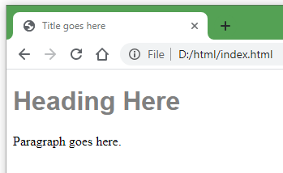

Lesson 3 - CSS Basics
Terms: CSS, rule, selector, property
Cascading Style Sheets contain rules for how web page content should be presented. CSS works alongside HTML in a web browser. To get an idea of how much of a web page’s appearance is controlled with CSS, look at the difference when CSS is disabled in the browser for LSU.edu:

Figure 1. Comparison of a web page rendered in a browser with CSS and without CSS.
The comparison in the figure shows that CSS rules control not only colors and fonts but also the entire structure of the page.
CSS for looks
To see a CSS rule in action, let’s revisit the h1 tag example. By default, a browser might render heading text with the font Times New Roman and the color black. We could create a CSS rule to change the font to Arial and color to gray.
h1 {
font-family: Arial;
color: Gray
}
This code would normally be placed in a separate .css file and linked to from the HTML file (more on that later). The result is a heading now rendered differently in the browser:

Try it on CodePen again, with the same HTML as before but now paste the CSS rule into the CSS box.
CSS for structure
For the web maps that we will create in this course, we will need to use CSS to make a place on the web page to draw a map. Guides typically use the div (division) tag to create a sort of box to hold a map. Let’s modify the previous example to draw a div box around the paragraph text.
First, enclose the paragraph tags within div tags:
<div><p>Paragraph goes here.</p></div>
Formatted with indentation for human readability, the code looks like this but functions the same:
<div>
<p>Paragraph goes here.</p>
</div>
Selectors and properties
If you insert that into the example on CodePen, there is no change in appearance because, by default, the browser does not draw a border around a div. Create a CSS rule to do that and test it on CodePen. The result should be a black border around the words “Paragraph goes here.”
Below is a CSS rule. Note the syntax:
- The selector is
div, meaning the rule will apply to alldivelements in the HTML. - The property:value pair is
border-style: solid. - Property:value pairs are contained within curly braces
{ }. - Each property:value pair ends with a semi-colon
;
div {
border-style: solid;
}
In addition to the border-style property, add another property into that rule to give the div an on-screen height of 400 pixels.
div {
border-style: solid;
height: 400px;
}
Our rules so far, for h1 and div, will affect every h1 and div on our page. What if we only want a rule to apply to a single div? HTML tags can have attributes that help identify them, which is useful for applying CSS rules to specific tags. Replace your CodePen’s HTML and CSS:
HTML tags with class and id attributes:
<h1 class="my-class">Heading Here</h1>
<div id="my-id">
<p>Paragraph goes here.</p>
</div>
CSS with a class selector (preceded by a period) and an ID selector (preceded with a #):
.my-class {
font-family: Arial;
color: Gray
}
#my-id {
border-style: solid;
height: 400px;
}
Now the h1 heading in the HTML has been assigned a class of my-class, and the div has been assigned an ID of my-id. The examples my-class and my-id could be replaced with anything that makes sense, but avoid spaces and special characters besides the hyphen.
To summarize:
class="my-class"(HTML) corresponds to.my-class(CSS)id="my-id"(HTML) corresponds to#my-id(CSS)
What is the difference between an ID and a class attribute? An ID should have a unique value, whereas a class can be reused on multiple tags.
Therefore, if we wanted the paragraph text to be formatted as gray Arial like the heading, we could give the p tag the same class:
<p class="my-class">Paragraph goes here.</p>
However, you should not create another div using the same ID value. If you wanted other div tags to also have a black border, you should use a class instead.
Most web map libraries require a map to be contained in a div with an id attribute, which is the main reason why the id attribute is included in this lesson.
Your code and the result should now look like this:
See the Pen Web Page Basics - HTML by geog4046instructor (@geog4046) on CodePen.
Our example now contains HTML and CSS, giving us a static (unchanging) web page, but it does not allow for any interaction, which is something we will need later on with our web maps. For that, we need JavaScript.
There is much, much more to CSS than will be covered in this course, but an understanding of CSS selectors, properties, and their relationship with the id and class attributes in HTML will prepare you to follow guides for Web GIS JavaScript libraries.
Other Learning Resources
- Codecademy - Learn CSS: Selectors and Visual Rules
- This is a long lesson but doing only the first few parts could still be helpful.
- Mozilla - CSS Basics